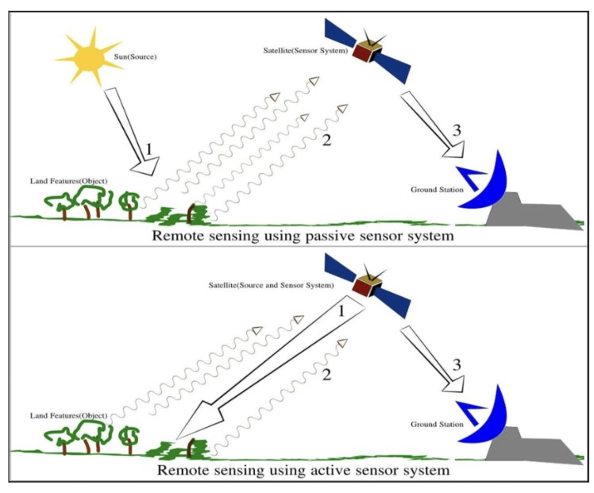
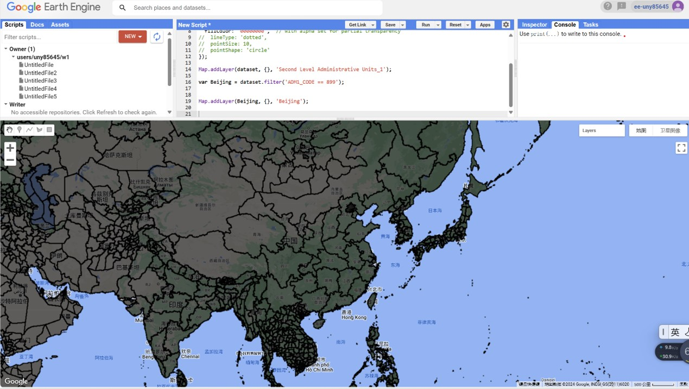
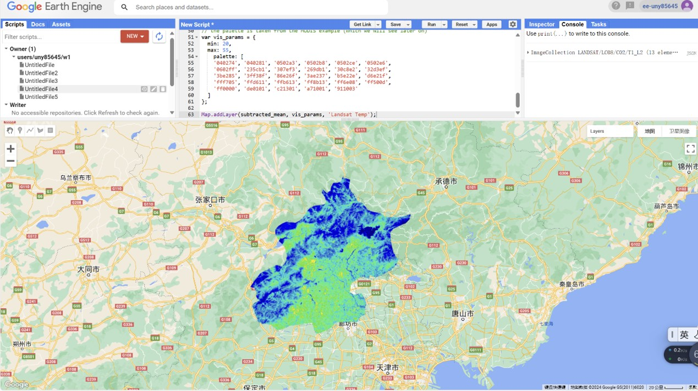
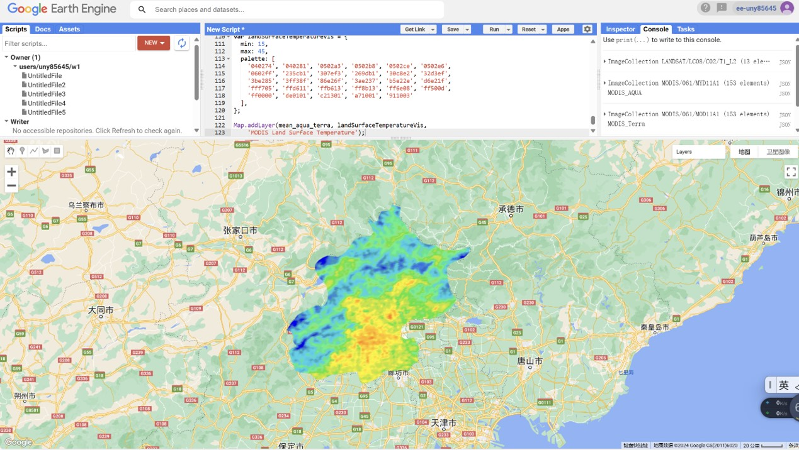
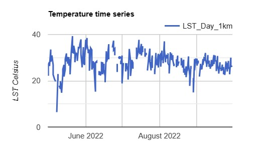
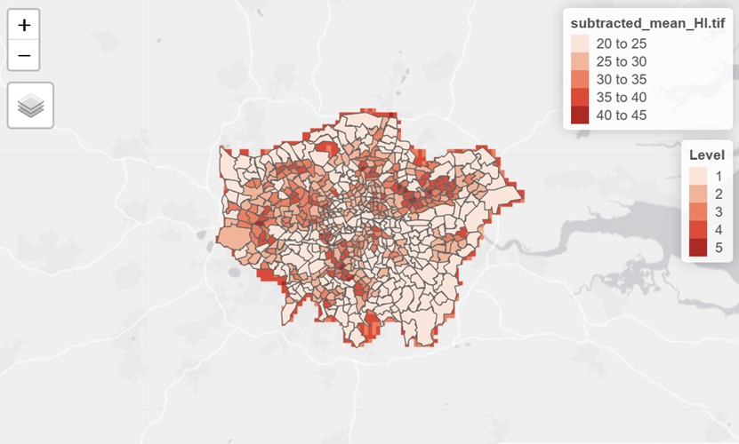
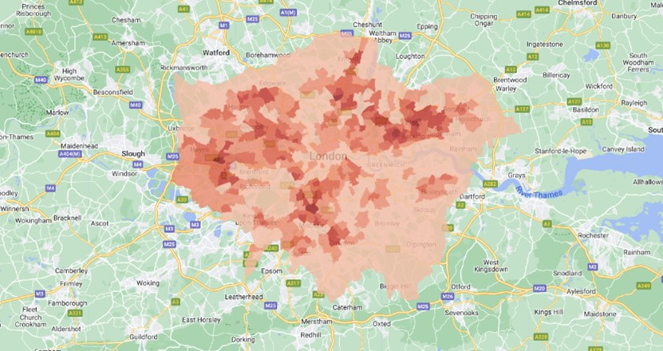
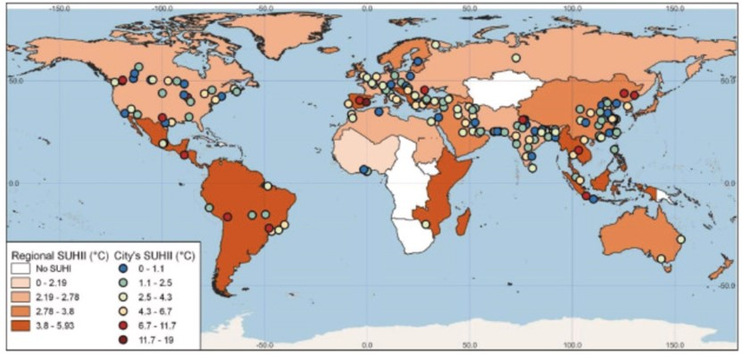

9 week9
9.1 Summary
9.1.1 Lecture
Passive and active sensor
Photography aperture: lets more light in to change focus
“synthetic” aperture: synthesize a long antenna by combining signals, or echoes, received by the radar as it moves along a flight track
SAR polarization
Single: 1 horizontal (or vertical)
Dual: transmits and receives both horizontal and vertical
HH: emitted in horizontal (H) and received in horizontal (H)
Rough scattering (e.g. bare earth): most sensitive to VV
Volume scattering (e.g. leaves): cross, VH or HV
Double bounce (e.g. trees / buildings): most sensitive to HH
A SAR signal has both amplitude (backscatter) and phase data
SAR = active sensor, see through clouds, records energy reflected back
InSAR = used for DEMs, converting phase different to relative height
DInSAR = changes between two images in time. Looking at movement of land (uplift or sinking) with topography removed (using a DEM)
power scale: analysis
amplitude scale: visualization
dB scale: dark pixel differences
Decision level fusion:
Used radar and optical as separate layers (just appending a band to the stack)
Then classify
Object level fusion:
Need to make objects from the imagery
Combine optical and SAR (as in decision level)
Classify
Image fusion:
Pixel values are combined from both optical and SAR
New pixel values
9.1.2 Practice
1.vector data

2.Landsat

3.MODIS

4. Statistics per spatial unit

5.heat index


Application
In terms of temperature, an example of a remote sensing application is the study of the urban heat island effect. The figure below shows the global standardized surface urban heat island effect. Parts of Bangladesh, Brazil and Indonesia can experience heat island effects of more than 10 degrees Celsius per year (Diem et al., 2023).

Measures to mitigate the surface urban heat island effect can be divided into five categories: urban greening, water bodies, urban ventilation, building materials, and urban sprawl control. Increasing vegetation coverage can effectively offset the increase of surface urban heat island effect. Water bodies in urban environments play a cooling role at night. Ventilation corridors allow cold air to be transported from outside the city to dense urban areas. Urban materials with high albedo and reflectivity help mitigate the urban heat island effect. Controlling urban sprawl can solve the problem of restraining the growth of heat island effect.
9.2 Reflection
In this week’s lecture, we have learned the relevant knowledge of synthetic aperture radar data and understood the polarization of SAR. SAR and optical data can be fused through primary component analysis, object-based image analysis, and intensity fusion. In practice, we explored the temperature of urban areas through Landsat and MODIS data. Through literature review, I learned that the application of remote sensing on urban heat island effect is an important research direction of remote sensing in the field of temperature. Surface temperature and air temperature are two concepts commonly used in meteorology, and there are some important differences between them: Definition: Surface temperature: refers to the temperature of the Earth’s surface, usually the temperature of the ground or land surface. This temperature is usually determined by a combination of solar radiation, surface characteristics (such as soil type, cover, etc.), and atmospheric influences. Air temperature: refers to the temperature at a certain point in the atmosphere, usually at different altitudes or locations. Air temperature is usually determined by the heat distribution of the atmosphere, the pressure of the gas, humidity and other factors. Measurement method: Surface temperature is usually measured by ground thermometer, infrared remote sensing and other methods. Air temperature is usually measured by meteorological instruments such as thermometers at different heights or locations. Change characteristics: The surface temperature change is usually relatively slow, affected by surface characteristics, solar radiation and so on. Air temperature changes rapidly, which is affected by atmospheric heat transfer and water vapor content. Influencing factors: Surface temperature is affected by surface characteristics, solar radiation, atmospheric transparency and other factors. Air temperature is affected by the vertical heat transfer of the atmosphere, water vapor content, terrain and other factors.